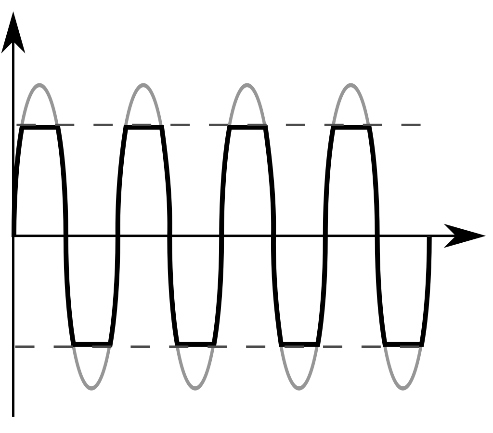

Delay:
Диле́й (англ. delay), или э́хо (англ. echo) — звуковой эффект или соответствующее устройство, имитирующее чёткие затухающие повторы (эхо) исходного сигнала. Эффект реализуется добавлением к исходному сигналу его копии или нескольких копий, задержанных по времени. Под дилеем обычно подразумевается однократная задержка сигнала, в то время как эффект «эхо» — многократные повторы. По принципу действия является частным случаем ревербератора. Отличие заключается в том, что дилей имеет одну линию задержки и больший временной интервал (не менее 50—60 мс), который позволяет отделить оригинальный звук от эффекта на слух. Эффект дилея не встречается в природе и носит рукотворный характер.
Distortion
Дисто́ршн (также «дистошн», «дисторция»; англ. distortion — искажение) — эффект достигается путем электронного сжатия или с помощью клиппирования входного звукового сигнала. В результате он добавляет звуку сустейн, дополнительные гармоники и обертона, создавая богатый звук. При минимальном вмешательстве в форму звуковой волны, можно оригинальный звук сделать более теплым и «толстым», а при радикальном искажении - добавить жирность, злость, да и вообще существенно изменить тембр. Достигается эффект дисторшн за счёт обрезки амплитуды аудиосигнала, когда срезаются пики в определенном интервале. Рисунок позволяет наглядно увидеть, чем отличаются входящий и искаженные сигналы:
Flanger
Фланжер (англ. flanger, flange — фланжировать, фланец, фланцевать) — звуковой эффект или соответствующее устройство. Напоминает «летящее» звучание. По принципу работы схож с хорусом, и отличается от него временем задержки (5—15 мс) и наличием обратной связи (feedback). Сначала входной сигнал разделяется на два независимых сигнала, один из которых остается без изменений, в то время как другой поступает на линию задержки. В линии задержки осуществляется задержка сигнала на 5-15 мс, причем время задержки изменяется в соответствии с сигналом генератора низких частот. На выходе задержанный сигнал смешивается с исходным. Генератор низких частот осуществляет модуляцию времени задержки сигнала. Он вырабатывает колебания определённой формы, лежащие в пределах от 3 Гц и ниже. Изменяя частоту, форму и амплитуду колебаний низкочастотного генератора, можно получать различный выходной сигнал. Часть выходного сигнала подается обратно на вход и в линию задержки. В результате резонанса сигналов получается фланжер-эффект. Фаза сигнала обратной связи иногда инвертируется, тем самым достигается дополнительная вариация звукового сигнала. Параметры эффекта:
- Скорость (Speed, Rate) - скорость изменения времени задержки.
- Глубина (Depth, Range) - характеризует диапазон изменения времени задержки.
- Обратная связь (Feedback) - количество подаваемого сигнала с выхода на вход.
- Баланс (Mix, Dry/wet) - соотношение необработанного и обработанного сигналов.
Reverb
Реверберация (англ. Reverberation или Reverb) — эффект создаётся, когда какой-либо звук звучит в замкнутом пространстве, в результате чего отражения от поверхностей стен вызывают большое количество эхо, затем звук медленно затухает по причине поглощения звуковых волн стенами и воздухом. Эффект наиболее заметен, когда источник звука перестаёт звучать, но отражения всё ещё звучат, амплитуда отражений постепенно затухает, пока они не перестают быть слышны. Длительность затухания отражений называется временем реверберации. Оно получает особое внимание при архитектурном проектировании больших камерных залов, которые должны иметь определенное время реверберации для достижения оптимальной эффективности. По сравнению с различными эхо, звучание которых расположено с промежутком в 50 - 100 мс, реверберация имеет тысячи эхо, которые расположены очень близко (0.01 - 1 мс между эхо-сигналами). С помощью реверберации можно создать эффект приближения и удаления источника звука. Для этого постепенно изменяют уровень реверберации, создавая иллюзию изменения звукового плана. При озвучивании фильмов или звуковом оформлении нередко возникает потребность подчеркнуть акустическую обстановку того или иного места действия. Для этого также используют эффект реверберации.Эффект также очень часто используют для улучшения и подчёркивания художественной выразительности речи, вокала, звучания отдельных музыкальных инструментов. Реверберации может нести не только характер внешнего оформления, но и использоваться как средство усиления драматического действия. Например шёпот записанный с большим временем реверберации создаёт напряжённый, пугающий эффект.
Tremolo
Тремоло — это эффект модуляции, который ритмично изменяет громкость вашего сигнала. Изменение амплитуды звука, достигаемое с помощью электронных средств, иногда ошибочно называемое вибрато и производящее звук, несколько напоминающий фленджер, называемый «подводным эффектом».
Stereo panner
Эффект стереопанорамирования позволяет изменить громкость звука, исходящего из левого или правого динамика. Например, если у вас есть стереозапись со всем звуком, исходящим только из одного динамика, вы можете использовать эффект панорамирования, чтобы «центрировать» звук самостоятельно. Вы также можете сделать так, чтобы центральное изменение звука перемещалось от одного динамика к другому во время воспроизведения звукового файла.
Compressor
Компрессор (от англ. «compress» — сжимать, сдавливать) — электронное устройство или компьютерная программа, выполняющее уменьшение (сжатие) динамического диапазона звукового сигнала; иными словами, компрессор позволяет сделать более узкой разницу между самым тихим и самым громким звуком. Суть работы компрессора состоит в том, что он непрерывно определяет уровень входного сигнала, и, если тот превышает заданное пороговое значение, компрессор его ослабляет на определённую величину (срабатывает). Сжатие может улучшить слышимость звука в шумных местах, где фоновый шум может скрывать тихие звуки. В то время как громкие звуки будут находится на комфортном для прослушивания уровне, тихие будут не слышны, и если просто повысить общую громкость, то тихие звуки станут слышны, но громкие станут слишком громкими. Если к этому звуку применить компрессию снижающую уровень громких звуков, то общий уровень громкости может быть увеличен до того уровня, когда будут слышны тихие звуки, и в то же время громкие будут не слишком громкими. Компрессор имеет четыре основных параметра:
- Пороговый уровень (порог срабатывания) (англ. Threshold) — определяет уровень входного сигнала, выше которого компрессор начинает ослаблять сигнал. Выражается в децибелах
- Колено (англ. Knee) управляет изгибом компрессии на пороговом значении, оно может быть острым или округлым. Мягкое колено медленно увеличивает соотношение сжатия, и в конечном итоге достигает сжатия заданного пользователем. Мягкое колено уменьшает заметность перехода от несжатого сигнала к сжатому, особенно для более высокого соотношения, где переход более заметен. При жёстком колене компрессия начинается и прекращается резко, что делает её более заметной.
- Время атаки (англ. Attack) — это время, которое проходит между превышением порогового значения и моментом достижения заданного соотношения. Выражается в миллисекундах. Эксперименты с этим параметром позволяют получить особые эффекты, например, можно сделать звук бас-барабана заметно чётче.
- Время спада (восстановления) (англ. Release) — это время, которое проходит между тем, как уровень входного сигнала упал ниже порога, и моментом, когда компрессор перестаёт ослаблять сигнал. Также выражается в миллисекундах.
- Соотношение (степень сжатия) (англ. Ratio) — определяет интенсивность ослабления сигнала, выражается в формате «х:1», где «1» — превышение уровня выходного сигнала над пороговым уровнем равное 1 дБ, а «x» — соответствующее ему превышение уровня входного сигнала в децибелах над пороговым уровнем. Например, если установлено соотношение «2:1», то при превышении входным сигналом порогового уровня на 10 дБ на выходе компрессора сигнал будет на 5 дБ выше порогового уровня.